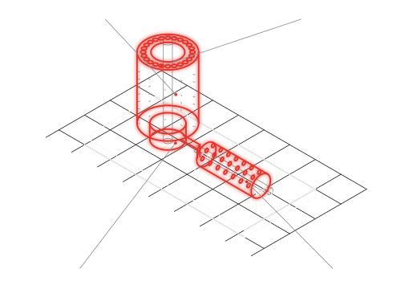

Tamburi a vuoto, rulli aspiranti, rotori di dosaggio e distributori pneumatici in PA12 sinterizzato: il corpo cilindrico nasce in un pezzo, con i condotti interni che seguono la funzione e non la punta del trapano. Da 1 a 50 pezzi, fino a 700 mm in un pezzo, senza fusione, senza foratura profonda, senza incollaggi.

Condotti rettangolari, curvi, a sezione variabile, che a foratura non esistono: la geometria segue il flusso d'aria e il corpo resta uno, senza tappi né raccordi.
La camera da 700 x 380 x 580 mm prende un rullo da 600 mm intero, sdraiato, con diametri fino a 370: il formato lungo non si spezza in tronchi da incollare.
Il tamburo per il contenitore nuovo, il passo di semina diverso, il rullo per la banda più larga: una revisione, un lotto, nessun riattrezzaggio. Ricambio identico anche fra dieci anni.
La poliammide pesa un terzo dell'alluminio e un ottavo dell'acciaio: meno inerzia sul tamburo che gira, cuscinetti meno caricati.
| Materiale | Processo | Perché qui | Riferimento |
|---|---|---|---|
| PA2200 (PA12) | SLS | tamburi, rulli, rotori: rigido, tenace, EU 10/2011, da −40 a +80 °C sotto carico | DPG-MAT-PA2200 |
| Polipropilene | SAF | collettori a contatto con acqua e chimica di lavaggio | DPG-MAT-PP |
| Nylon 12CF | FDM | alberi e staffe: rigidità estrema a peso minimo | matriceDPG-CAT §01 |
Per un costruttore di forni professionali produciamo in serie ricorrente cassetti e profili raccogligocce in PA2200: componenti a contatto con il prodotto, pareti da 2,5 mm, riordinati in lotti piccoli, lotto tracciato. Non un prototipo: una fornitura.
La tenuta fra canali adiacenti dipende dal setto e dalla porosità residua del sinterizzato: sotto i 2 mm la verifichiamo sul prototipo, e dove serve si impregna. Diametri e teste si riprendono al tornio quando la tolleranza standard non basta. Il rullo che porta carichi alti resta in acciaio: ve lo diciamo sul disegno.